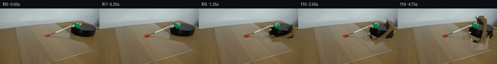

![首帧]()

Round 00
2026-11-06T03:28:40.222562+00:00像素候选变化代码 +459/−0inspection 更新
pixels 0c517ddc47e5f2a2 · code 302a77b47e3e1a1b
查看本轮 generate.py 真实 diff
--- previous/generate.py +++ current/generate.py @@ -0,0 +1,459 @@ +"""generate.py — PixelWorld-Text frame generation for case_0130_attempt_01. + +Scene: Paintbrush attached to a black platform rotates clockwise, passes through +a dollop of red paint on a clear acrylic sheet, and moves past it. + +Outputs 20 RGB frames at 256×144, plus all required artifacts. +""" +import numpy as np +from PIL import Image, ImageDraw +from pathlib import Path +import math + +# ── Configuration ──────────────────────────────────────────────────────────── +CASE_DIR = Path(__file__).parent +FRAMES_DIR = CASE_DIR / "frames" +TMP_DIR = CASE_DIR / ".tmp" +H, W = 144, 256 +N_FRAMES = 20 +FPS = 4 + +# Scene measurements (from OBSERVATION.md analysis) +PIVOT = (208, 62) # center of black platform +RED_PAINT_CENTER = (121, 70) # center of red paint dollop +TOTAL_ROTATION_DEG = -88.0 # clockwise rotation over 5s (negative = clockwise) +DEG_PER_FRAME = TOTAL_ROTATION_DEG / (N_FRAMES - 1) + +# ── Helper functions ───────────────────────────────────────────────────────── + +def load_frame0(): + """Load first_frame.png as uint8 RGB array.""" + return np.array(Image.open(CASE_DIR / "first_frame.png")) + + +def identify_brush_mask(img): + """Return a boolean mask of all brush pixels in frame 0. + + The paintbrush consists of: + - Handle: beige/light brown region extending left from the platform + - Ferrule: dark metallic band near the platform edge + - Bristles: dark/reddish tip area near the red paint + + Strategy: Find connected dark pixels adjacent to the black platform + and the contiguous beige handle extending from them. + """ + mask = np.zeros((H, W), dtype=bool) + + # ── 1. Black platform mask ── + platform = (img[:, :, 0] < 15) & (img[:, :, 1] < 15) & (img[:, :, 2] < 15) + + # ── 2. Ferrule/bristles: dark pixels along the left edge of the platform ── + # These are dark brown, adjacent to the black platform, with R>G>B + ferrule = ( + (img[:, :, 0] > 12) & (img[:, :, 0] < 85) + & (img[:, :, 1] > 8) & (img[:, :, 1] < 65) + & (img[:, :, 2] > 3) & (img[:, :, 2] < 48) + & (img[:, :, 0] > img[:, :, 1]) + & (img[:, :, 1] > img[:, :, 2]) + ) + # Dilate platform to find adjacent ferrule pixels + from scipy import ndimage + plat_dilated = ndimage.binary_dilation(platform, structure=np.ones((5, 5)), iterations=3) + ferrule_adj = ferrule & plat_dilated & ~platform + mask |= ferrule_adj + + # ── 3. Brush handle: beige pixels connected to ferrule ── + handle = ( + (img[:, :, 0] > 128) & (img[:, :, 0] < 178) + & (img[:, :, 1] > 105) & (img[:, :, 1] < 168) + & (img[:, :, 2] > 80) & (img[:, :, 2] < 140) + & (img[:, :, 0].astype(int) - img[:, :, 1].astype(int) > 2) + & (img[:, :, 1].astype(int) - img[:, :, 2].astype(int) > 2) + ) + # Connect handle pixels to ferrule via dilation + ferrule_dilated = ndimage.binary_dilation(mask, structure=np.ones((7, 7)), iterations=4) + handle_connected = handle & ferrule_dilated + mask |= handle_connected + + # Grow the mask to include more of the handle via iterative dilation + for _ in range(3): + grown = ndimage.binary_dilation(mask, structure=np.ones((5, 5)), iterations=1) + new = grown & handle & ~mask + if not new.any(): + break + mask |= new + + # ── 4. Bristles near the red paint ── + # Slightly darker area between ferrule and red paint … diff truncated; 372 more lines …